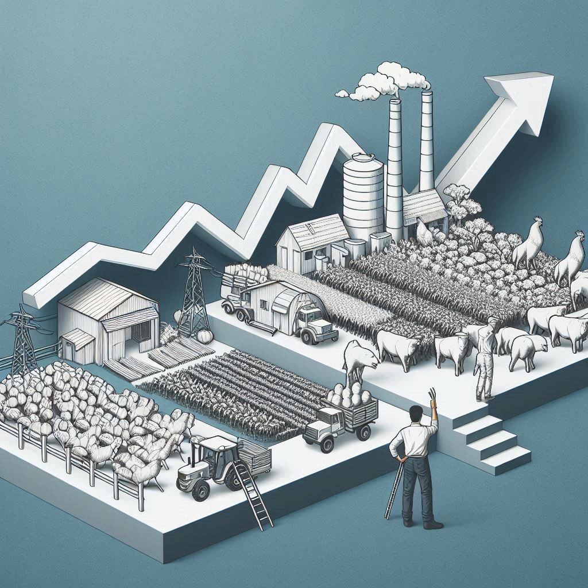
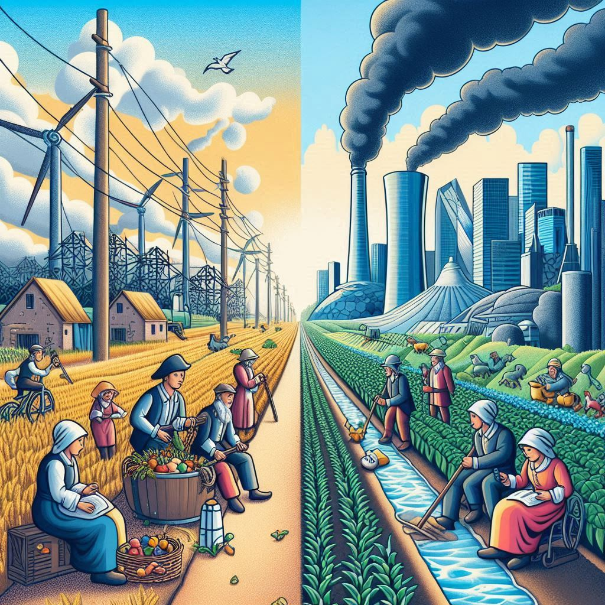
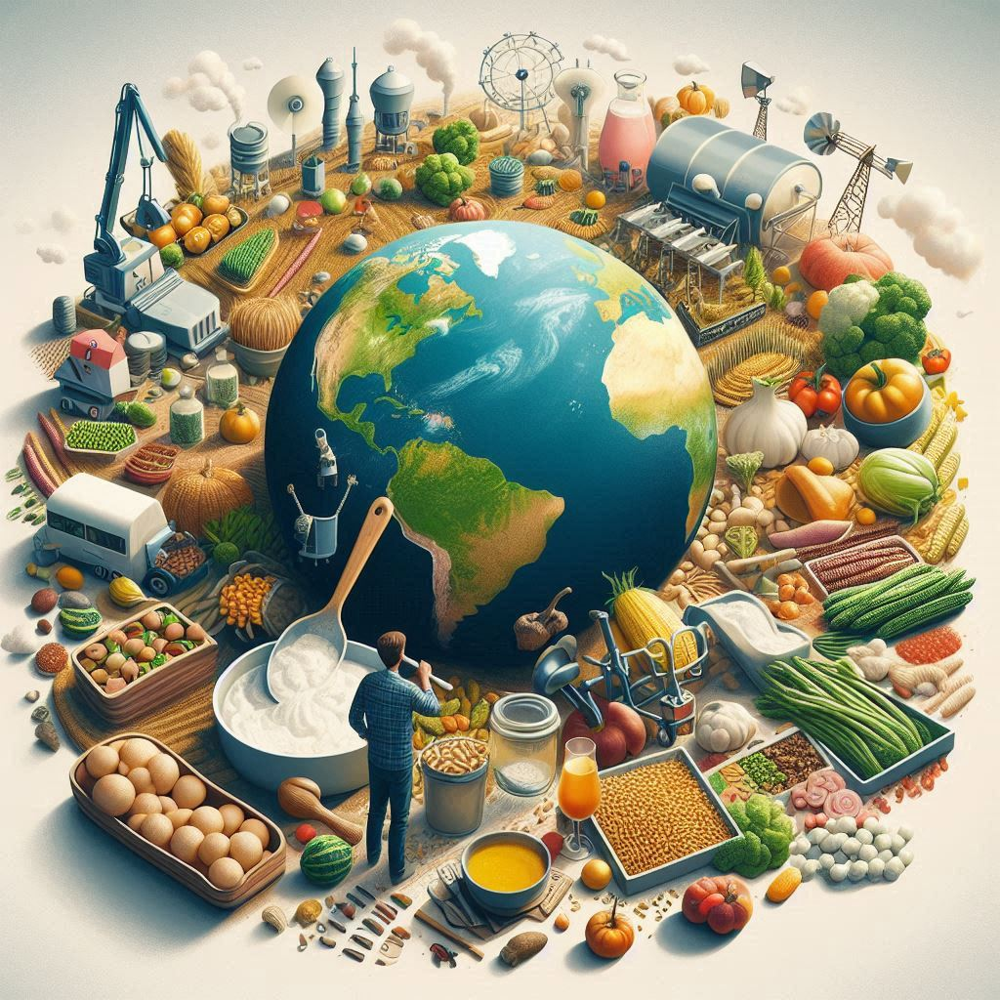

Farming took a significant turn in light of the industrial revolution, pushing it into a more globally focused market over the last couple of centuries. Since the beginning of agriculture, villages would have their own farms dedicated to their village, part of this production also soon began to be used in trade. As larger civilisations emerged farming would remain regional but may have been involved in some national distribution or be internationally traded on behalf of the nation — yet still the agricultural focus was regional. However recently, in the emergence of a globalised world, agriculture became international and began to focus on capital.

The focus on goods
Due to a larger capitalist market, the opportunities for landowners to make significantly larger sums of money from farming arised. This led to a variety of changes in the industry of farming, such as its scope, its specification and the technology used, all due to a shifting in the purpose and focus of farms and their new market, something which was of course furthered with the coming globalisation which is now so familiar. Firstly, the perspective began to change of what was actually being produced. Initially this perspective was as it seems, that food was being produced and this was typically farmed regionally and often sold in farmers markets. However this began to change into what is now the modern perspective on what is being produced, which is goods — a means to gain more money and capital. Albeit that food was and still is obviously valued and required (and consequently is farmed), some of the more high demand goods that can be grown on farms which are now commonplace include fuels like ethanol (made from corn), industrial crops such as cotton and rubber, as well as animal feed. For example, nearly 80% of soy produced in farms is used as animal feed for predominantly beef and chicken. As well as the mindset of what is being produced changing, the mindset of why it is being produced has changed accordingly. Rather than selling produce at local and regional markets, the focus has shifted to global produce such that, for example, if there is a nearby wheat farm it is still likely that your bread at the supermarket may be shipped from another state or country. Although many farmers may not like the route which the industry has taken, hoping to focus on a more local market, the problem is that it is frankly not feasible and, especially for a larger farm, farmers are forced into selling their produce on the global market to make good money and stay within the competition. These significant changes in the manner of farming over the last couple centuries as well as the fossil fuel revolution at a similar time have now also led to a change in how the production is powered and the technology used.

The fuel for farms
To keep farms running efficiently, powering both the technology and the crops themselves, farms now must implement various chemicals as well as fossil fuels to power their machinery into their practices. Due to the larger market and the larger scale of production, it is now demanded that farms use chemicals such as pesticides and fertilisers to get maximum produce. Pesticides are used to kill unhelpful wildlife in the farm, such as pests and weeds, something which allows a more encouraging environment for the growth of the crops. To pair with this, fertilisers are also used to increase the nutrition available to the crops, such as phosphorus and nitrogen. Both of these chemicals have radically changed the landscape of farming from a more organic environment in consensus with nature to a far greater focus on maximum-yield. Another means of increasing production, something initially sparked by the industrial revolution, has been the introduction, and now commonplace presence, of machinery in farms such as harvesters, tillers and tractors. All of these have been used to eliminate human presence for all aspects of farming, something especially important for larger farms with more crops, and subsequently speed up the farming process significantly, making it more efficient.
How has this affected our environment?
However, even with the enormous increase in production of farms, something which has been a major contributor to humanity's recent explosion in population and connectivity, these advancements have not come without a significant effect on the environment of our planet and its ecological system. The environmental effect of the aforementioned use of chemicals and machinery in the farming industry is significant. Pesticides and fertilisers have caused and are continuously causing a more than notable disruption to surrounding ecosystems of farms. Pesticides, by killing pests and weeds, have had an obvious disruption on local ecosystems, but they have also affected all sorts of local wildlife such as plants and animals like birds and foxes in a more dangerous way — by poisoning this local wildlife. Fertilisers have done a similar thing by changing the chemical and nutritional balance in the soil — something which has even led to changes, possibly quite forceful, on marine ecosystems by including larger amounts of chemicals such as potassium, phosphorus and nitrogen into the waterways, which can lead to excess growth of marine plants and algae. Furthermore, fossil fuels, the power of most machinery used in farms, have an obvious impact on the environment. A 2019 study conducted in Australia showed that over 80% of energy used in agriculture was diesel — creating an obvious greenhouse gas effect. For overall CO2 usage, the EPA estimated that total CO2 emissions in 2021 were 10.6% agricultural in the US. So how can this be limited while keeping a positive economical impact of farming.

The sustainable solution
Modern farming faces several issues in its organisation and business, especially in livestock care. Producing beef, for example, is resource-intensive. It uses a lot of water, fossil fuels, and crops like soy. Evidence shows that for every kilogram of beef, over 7,500 litres of water are needed. To reduce these issues, we must find better ways to make these foods and other industrial products. Lab-grown meat is a promising option for beef, offering more sustainable production.Alternative practices such as these could also free up more land, reducing the need for soy and cattle fields. This could be furthered as well by incorporating a more harmonious blend of the natural wildlife and farms, which makes increasingly evident a more sustainable and spatially efficient farming system. Not only would sustainable innovations here limit pesticide use due to an encouragement of wildlife, but they would allow farms to act as an extension of nature — rather than man-made nature. Overall however, it seems that even if the shift of farming production has evolved from a focus on food production to a focus on goods, issues with the business of the farming market are not paramount — this is mostly due to the future of humanity scaling up significantly, not just in demand, but in where that demand is coming from (eventually beyond Earth). Subsequently, to enhance farming's efficiency and sustainability, we need a more environmentally friendly approach. Just focusing on specific farming solutions isn't enough, this requires a global shift in our mindset and economy into a more sustainable future — something which is going to require far more than a collection of farmers, or some new innovations.